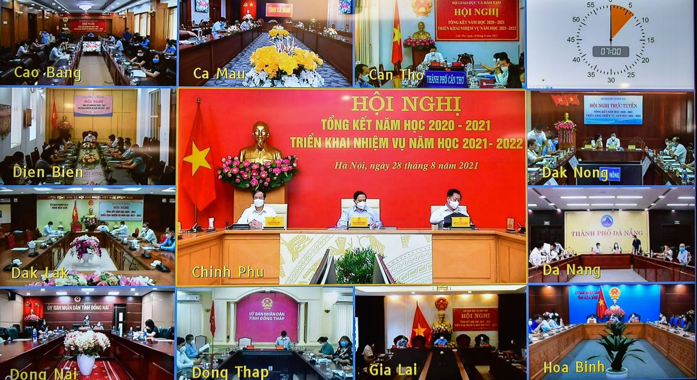

Bộ Giáo dục và Đào tạo tổ chức tổng kết năm học 2020 – 2021
Ngày 28/8/2021, Bộ Giáo dục và Đào tạo (GDĐT) tổ chức Hội nghị toàn quốc tổng kết năm học 2020 - 2021, triển khai nhiệm vụ năm học 2021 - 2022.
Hội nghị tổ chức theo hình thức trực tuyến với điểm cầu trung tâm tại Văn phòng Chính phủ, kết nối với Bộ GDĐT, 63 tỉnh/thành phố và hơn 400 điểm cầu tại các cơ sở giáo dục đại học…Dự Hội nghị có: Thủ tướng Chính phủ Phạm Minh Chính; Đồng chí Nguyễn Trọng Nghĩa - Trưởng ban Tuyên giáo Trung ương; Bà Nguyễn Thị Doan - nguyên Phó Chủ tịch nước, Chủ tịch Hội Khuyến học Việt Nam; Ông Nguyễn Đắc Vinh - Chủ nhiệm Ủy ban Văn hóa – Giáo dục, Thanh niên, thiếu niên và nhi đồng của Quốc hội; Bà Nguyễn Thúy Anh - Chủ nhiệm Ủy ban các vấn đề xã hội của Quốc hội; Ông Đào Ngọc Dung - Bộ trưởng Bộ LĐ, TBXH; Ông Nguyễn Mạnh Hùng - Bộ trưởng Bộ Thông tin và Truyền thông; Ông Hầu A Lềnh - Bộ trưởng, Chủ nhiệm Ủy ban Dân tộc; Ông Trần Văn Sơn - Bộ trưởng, Chủ nhiệm Văn phòng Chính phủ; Bí thư Tỉnh ủy Lê Quốc Phong và Chủ tịch UBND Tỉnh Phạm Thiện Nghĩa chủ trì tại điểm cầu Đồng Tháp.
Báo cáo kết quả thực hiện kế hoạch nhiệm vụ năm học 2020 - 2021 của ngành Giáo dục, Thứ trưởng Bộ GDĐT Hoàng Minh Sơn cho biết: Năm học 2020-2021 diễn ra trong bối cảnh có nhiều sự kiện quan trọng của đất nước, đặc biệt là Đại hội Đảng toàn quốc lần thứ XIII và Bầu cử đại biểu Quốc hội khóa XV. Năm học cũng diễn ra khi đại dịch Covid-19 hoành hành trên thế giới và bùng phát trở lại ở nước ta. Nhiều hoạt động kinh tế, xã hội bị ngưng trệ, đời sống nhân dân gặp nhiều khó khăn, trong một thời gian dài học sinh, sinh viên không thể đến trường. Đứng trước những yêu cầu và thách thức mới, ngành Giáo dục đã linh hoạt ứng phó, chuyển trạng thái hoạt động, hoàn thành cơ bản các nhiệm vụ của năm học và đã đạt được một số kết kết quả nổi bật: Hoàn thành mục tiêu kép, vừa bảo đảm an toàn phòng chống dịch, vừa hoàn thành kế hoạch năm học và bảo đảm chất lượng giáo dục; Tiếp tục hoàn thiện thể chế, nâng cao một bước hiệu quả quản lý nhà nước về GDĐT; Sắp xếp, quy hoạch mạng lưới cơ sở giáo dục, đào tạo hợp lý hơn; Chất lượng giáo dục các cấp học và hiệu quả hoạt động giáo dục được nâng lên; Đẩy mạnh thực hiện tự chủ đại học, nâng cao chất lượng đào tạo nguồn nhân lực, nhất là nguồn nhân lực chất lượng cao; Nâng cao chất lượng, chuẩn hóa đội ngũ giáo viên và cán bộ quản lý giáo dục các cấp; Tăng cường cơ sở vật chất, thiết bị dạy học, bảo đảm chất lượng các hoạt động giáo dục và đào tạo; Đẩy mạnh ứng dụng công nghệ thông tin và chuyển đổi số trong giáo dục, đào tạo; Nâng cao năng lực nghiên cứu khoa học, đổi mới sáng tạo và hội nhập quốc tế…

Bên cạnh các kết quả đạt được, năm học 2020-2021 cũng còn một số tồn tại, hạn chế liên quan đến sắp xếp, quy hoạch mạng lưới trường lớp; còn tình trạng thừa, thiếu cục bộ giáo viên; chất lượng đội ngũ không đồng đều. Tỷ lệ chi ngân sách nhà nước cho toàn ngành Giáo dục năm 2021 chỉ đạt khoảng 17,3% chi ngân sách cả nước, chưa đạt tỷ lệ theo quy định. Giáo dục đạo đức, lối sống, kỹ năng làm việc chưa được chú trọng đúng mức; kỷ luật, kỷ cương quản lý trường, lớp ở nhiều nơi còn buông lỏng. Chất lượng đào tạo nguồn nhân lực, nhất là nguồn nhân lực chất lượng cao còn hạn chế, chưa đáp ứng được yêu cầu phát triển kinh tế - xã hội. Việc triển khai tự chủ ĐH nhiều nơi còn lúng túng... Dịch bệnh Covid-19 diễn biến phức tạp cũng ảnh hưởng đến chất lượng dạy học...
Đối với phương hướng, nhiệm vụ trọng tâm năm học 2021-2022, Thứ trưởng Hoàng Minh Sơn nhấn mạnh việc thể chế hóa các quan điểm, chủ trương của Đảng và Nhà nước về phát triển GDĐT; rà soát và hoàn thiện các quy định về chức năng quản lý nhà nước quy định trong Luật Giáo dục và các văn bản quy phạm pháp luật khác có liên quan... Chuyển đổi trạng thái hoạt động của ngành Giáo dục thích ứng với dịch Covid-19 còn diễn biến phức tạp và có thể kéo dài, gắn với đẩy mạnh chuyển đổi số trong quản lý giáo dục, tổ chức các hoạt động dạy học và kiểm tra, đánh giá. Chủ động xây dựng và triển khai kế hoạch năm học 2021 - 2022 linh hoạt, phù hợp với tình hình dịch Covid-19 tại địa phương. Tận dụng tối đa thời gian tổ chức dạy học trực tiếp khi dịch bệnh được kiểm soát. Cùng với đó là các nhiệm vụ, giải pháp nhằm nâng cao chất lượng giáo dục mầm non, phổ thông, giáo dục thường xuyên và giáo dục đại học. Triển khai thực hiện hiệu quả công tác giáo dục lý tưởng cách mạng, tư tưởng chính trị, đạo đức, lối sống, kỹ năng sống, kỹ năng nghề nghiệp, việc làm cho học sinh, sinh viên… Những giải pháp bảo đảm đội ngũ giáo viên cả về số lượng và chất lượng. Ưu tiên cân đối ngân sách để đầu tư tăng cường cơ sở vật chất, thiết bị dạy học tối thiểu, bảo đảm thực hiện chương trình mới đối với lớp 1, lớp 2, lớp 6 và Chương trình GDPT 2018. Năm học 2021-2022 cũng chú trọng đẩy mạnh ứng dụng công nghệ thông tin và chuyển đổi số trong GD-ĐT, trước hết là để thích ứng với tình hình dịch Covid-19 diễn biến phức tạp, có thể còn kéo dài. Tăng cường hội nhập quốc tế. Tăng cường thanh tra, kiểm tra việc thực hiện chính sách pháp luật về GDĐT…
Phát biếu tại Hội nghị, các địa phương đã đề xuất nhiều nội dung: quy mô giáo dục lớn, mỗi năm tăng 44 trường với 69 nghìn học sinh nên biên chế giáo viên lớn, một số trường học quá tải; việc quản lý học phí theo Nghị định 86/2015/NĐ-CP còn bất cập; nhiều trường học khu vực nội thành khó công nhận đạt chuẩn quốc gia (hà Nội). Đề nghị Bộ GDĐT tham mưu cho Chính phủ trình Quốc hội sửa đổi, bổ sung một số Điều của Luật Giáo dục, trong đó có phổ cập giáo dục mầm non cho trẻ em mầm non 3-4 tuổi; tham mưu cho Chính phủ ban hành Chiến lược phát triển giáo dục giai đoạn 2021-2025; thực hiện Chương trình giáo dục phổ thông mới, đề nghị Chính phủ có cơ chế đặc thù hỗ trợ kinh phí cho các tỉnh miền núi, vùng cao nhiều khó khăn mua sắm thiết bị dạy học tối thiểu; Bộ GDĐT nghiên cứu, rà soát ban hành mới danh mục đồ dùng, đồ chơi, thiết bị tối thiểu đảm bảo thực hiện chương trình giáo dục mầm non sửa đổi và phổ cập giáo dục mầm non (Lào Cai). Đề nghị Bộ GDĐT: phối hợp với Bộ Nội vụ xem xét, tham mưu trình Chính phủ bổ sung biên chế giáo viên; hỗ trợ về cơ sở vật chất, thiết bị dạy học để tổ chức thực hiện tốt Chương trình giáo dục phổ thông năm 2018; kêu gọi các nguồn lực thực hiện thành công Đề án phát triển mô hình trường phổ thông DTNT, DTBT và trường có học sinh dân tộc bán trú; đề nghị Bộ xem xét lộ trình thực hiện Chương trình sách giáo khoa lớp 10 (Nghệ An)…
Phát biểu kết luận Hội nghị, thay mặt Đảng, Nhà nước, Chính phủ - Thủ tướng Phạm Minh Chính chúc mừng, ghi nhận, biểu dương kết quả ngành Giáo dục đã đạt được trong năm học vừa qua. Thủ tướng đồng thời biểu dương, ghi nhận sự tham gia của ngành Giáo dục trong công tác phòng chống dịch, đặc biệt là tinh thần chủ động xung phong của khối các trường y dược. Thủ tướng cũng nêu rõ những kết quả ngành Giáo dục đạt được trong năm học vừa qua; những vấn đề còn tồn tại, hạn chế cũng như những thách thức, nhiệm vụ đặt ra và cần có giải pháp khắc phục. Thời gian tới, Thủ tướng nhấn mạnh 2 nội dung: giải quyết các vấn đề của kế hoạch năm học 2021-2022 và giải quyết các vấn đề đang tồn tại của ngành, gắn với mục tiêu thực hiện các nghị quyết về phát triển giáo dục. Đáng lưu ý, năm học 2021-2022, Thủ tướng cho biết, Chính phủ sẽ có giải pháp cho năm học mới, bảo đảm an toàn trường học, gắn với tiêm vắc xin. Bộ Y tế phối hợp với Bộ GDĐT triển khai tiêm vắc xin cho học sinh; dựa trên căn cứ khoa học và độ tuổi để tính toán phân bổ, có kế hoạch tiêm cho phù hợp. Thủ tướng cũng có những chỉ đạo rất cụ thể, toàn diện về các vấn đề giáo dục, trên quan điểm “Giáo dục là quốc sách hàng đầu”./.